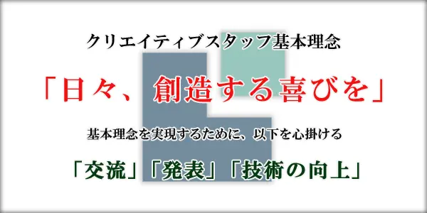

クリエイティブスタッフについて
クリエイティブスタッフは、東京工科大学所属の文化系公認サークルです。
マルチメディアコンテンツの制作を通して技能の向上を目指し、
ゲームプログラミングを中心とした創作活動を行っています。
-
基本理念

-
活動概要
みんなで、あるいは個人でゲームを作ります！ 経験者の先輩方から作り方を教わる講習もあります 夏休み以降は、大学の文化祭である秋の紅華祭やコミケ、春の新入生歓迎会を目標に作品の制作に取り組みます